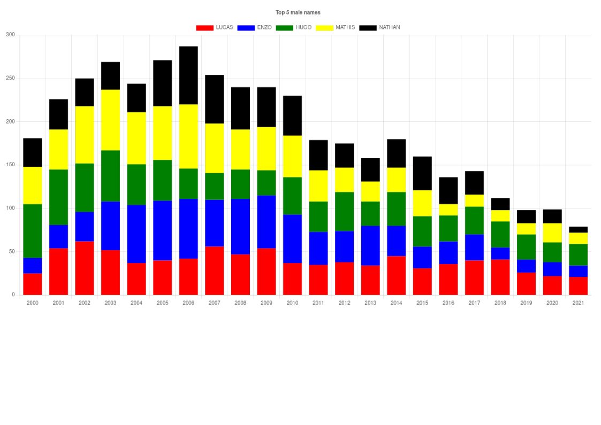

Le but principal de cette séance de TP est de vous faire utiliser un package tiers.
La bibliothèque choisie est chart.js
A FAIRE : En partant des séances précédentes, de votre étude du code joint et de l'exemple d'utilisation de chart.js inclu dans la présente page, réalisé le rendu suivant :
Vous pouvez cliquez ICI pour voir le chart demandé généré avec chart.js
Voici un exemple d'utilisation de chart.js